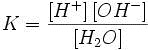
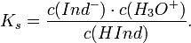

Ионное произведение воды. рН-растворов. Индиеаторы. Буфферные растворы.
Ио́нное произведе́ние воды́ — произведение концентраций ионов водорода Н+ и ионов гидроксида OH− в воде или в водных растворах, константа автопротолиза воды.
Вывод значения ионного произведения воды
Вода, хотя и является слабым электролитом, в небольшой степени диссоциирует:
H2O + H2O ↔ H3O+ + OH−
или
H2O ↔ H+ + OH−
Равновесие этой реакции сильно смещено влево. Константу диссоциации воды можно вычислить по формуле: где:
[H+] — концентрация ионов гидроксония (протонов);
[OH−] — концентрация гидроксид-ионов;
[H2O] — концентрация воды (в молекулярной форме) в воде;
Концентрация воды в воде, учитывая её малую степень диссоциации, величина практически постоянная и составляет (1000 г/л)/(18 г/моль) = 55,72 моль/л.
Константа Kв, равная произведению концентраций протонов и гидроксид-ионов, называется ионным произведением воды. Она является постоянной не только для чистой воды, но также и для разбавленных водных растворов веществ. C повышением температуры диссоциация воды увеличивается, следовательно, растёт и Kв, при понижении температуры — наоборот.
Практическое значение ионного произведения воды
Практическое значение ионного произведения воды велико, так как оно позволяет при известной кислотности (щёлочности) любого раствора (то есть при известной концентрации [H+] или [OH−]) найти соответственно концентрации [OH−] или [H+]. Хотя в большинстве случаев для удобства представления пользуются не абсолютными значениями концентраций, а взятыми с обратными знаком их десятичными логарифмами — соответственно, водородным показателем (pH) и гидроксильным показателем (pOH).
Так как Kв — константа, при добавлении к раствору кислоты (ионов H+), концентрация гидроксид-ионов OH− будет падать и наоборот. В нейтральной среде [H+] = [OH−] = моль/л. При концентрации [H+] > 10−7 моль/л (соответственно, концентрации [OH−] 10−7 моль/л (соответственно, концентрации [H+] < 10−7 моль/л) — щелочной. Чистая вода очень плохо проводит электрический ток, но всё же обладает измеримой электрической проводимостью, которая объясняется небольшой диссоциацией воды на ионы водорода и гидроксид-ионы. Для воды и разбавленных водных растворов при неизменной температуре произведение концентраций ионов водорода и гидросид-ионов есть величина постоянная. Эта постоянная величина называется ионным произведением воды. Растворы, в которых концентрация ионов водорода и гидроксид-ионов одинаковы, называются
нейтральными растворами.
Если концентрация ионов водорода в водном растворе известна, то тем самым определена и концентрация гидроксид-ионов. Поэтому как степень кислотности, так истепень щёлочности раствора можно количественно охарактеризовать концентрацией ионов водорода. Кислотность и щелочность раствора можно выразить другим, более удобным способом: вместо концентрации ионов водорода указывают её десятичный логарифм, взятый с обратным знаком.
Эта величина называется водородным показателем и обозначается через рН:
рН=-lg[H+]
Для измерения рН существуют различные методы. Приближённо реакцию
раствора можно определить с помощью специальных реактивов, называемых
индикаторами, окраска которых меняется в зависимости от концентрации ионов
водорода. Наиболее распространённый индикатор – метиловый оранжевый,
метиловый красный, фенолфтолеин.
ИНДИКАТОРЫ (от лат. indicator – указатель) – вещества, позволяющие следить за составом среды или за протеканием химической реакции. Одни из самых распространенных – кислотно-основные индикаторы, которые изменяют цвет в зависимости от кислотности раствора. Происходит это потому, что в кислой и щелочной среде молекулы индикатора имеют разное строение.
Кислотно-основные индикаторы — органические соединения, способные изменять цвет в растворе при изменении кислотности (рН). Индикаторы широко используют в титровании в аналитической химии и биохимии. Из-за субъективности определения цвета, индикаторы pH не всегда удобны, для точного измерения pH используют pH-метры с цифровой индикацией.
Измерение pH с помощью индикаторной бумаги
Ks: 
Формы применения индикаторов
Индикаторы обычно используют, добавляя несколько капель водного или спиртового раствора, либо немного порошка (например, смесь мурексида с хлоридом натрия) к пробе исследуемого раствора. Так, при титровании, в аликвоту исследуемого раствора добавляют индикатор, и наблюдают за изменениями цвета в точке эквивалентности.
Другой способ применения - использование полосок бумаги, пропитанных раствором индикатора или смеси индикаторов и высушенных (например, "Универсальный индикатор"). Такие полоски выпускают в самых разнообразных вариантах - с нанесенной на них цветной шкалой - эталоном цвета (в том числе для окрашенных или мутных сред), или с напечатанными числовыми значениями рН; для точного измерения в узких диапазонах рН, и для ориентировочного исследования растворов; в рулончиках, коробках и пеналах, или в виде отрывных книжечек.
Современные индикаторные полоски могут быть изготовлены с красителем - индикатором, привитым к целлюлозе или иному полимеру. Это делает их устойчивыми к вымыванию, вплоть до многократного использования.